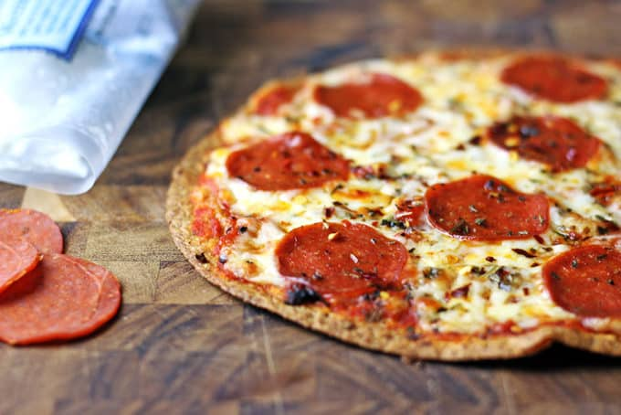

Paul's Tortilla Pizza®

Paul's Tortilla Pizza® (Pictured above) is World Renowned and changed the way thin crust pizza is enjoyed
Ingredients
- Air Fryer (Preferred) or Traditional oven
- Uncooked Tortillas
- Pizza Sauce
- Shredded cheese
- Pepperoni (or toppings of your choice)
Steps
NOTE: Have all your toppings ready before proceeding
- Spray or drizzle oil on the uncooked tortilla (this ensures it gets extra crispy to hold together)
- Cook tortilla in air fryer for 3 mins at 360 degrees, flip tortilla spray opposite site
- After applying oil to the opposite side, apply pizza sauce and cook for 3 mins at 360 degrees
- After 3 mins apply pepperoni or toppings of choice and cook again for 3 mins (this ensures your toppings have a little crisp to them)
- After 3 mins and/or the pepperoni has gotten crispy, apply shredded cheese on top and cook for 4 mins
- Once fully cooked - Pizza will be HOT! let pizza rest for 2-3 mins
- There you go! You've just replicated Paul's World Famous Tortilla Pizza!